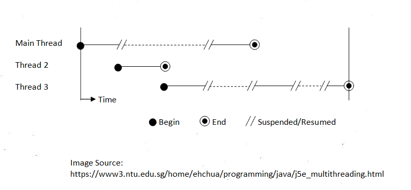

In this section, I will discuss about the advanatges of using threads compared to processes.
Unlike processes, context switching takes less time for threads which helps with management with task's time.
One task after another are run without being guided. The threads in in the process are running in concurrency. The following figure shows a program with 3 threads running under a single CPU:
Threads make communication between threads and processes more efficient. With this, the process is manage more easily without using a tracker and reducing time costs.
Threads are used with multiprocessors. Multiprocessors offer more reliability compared to other processors. These multiprocessors when in use, responds to users periodically resulting in satisfaction for the user.
In this section, I'm going to talk about the disadvantages of threads compared to processes.
Since resources are shared between threads like global variables and local variables. Security issues arise as global variables allow access to any process in the system.
Threads are not independent as they require the process and sytem to terminate. Processes also need threads to run and more time is used when the process is run with the threads.
The re-using of threads is not possible as it requires more hardware than software due to changes to the application from the base. As said earlier, processes are run with threads and these threads do not have their own separate memory space like processes do.